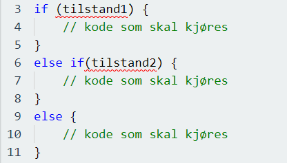

Hva er tilstander?
Tilstander innen programmering er noe vi bruker får å fortelle programmet å utføre ulike handlinger basert på ulike tilstander. Ofte når vi skriver kode, så vil vi utføre ulike handlinger for ulike bestemmelser, og det er det vi kan bruke tilstander til. I JavaScript så har vi følgende tilstander som vi kan bruke:
- Bruk «if» for å spesifisere at en kodesnutt skal kjøres, hvis en spesifikk tilstand er sann.
- Bruk «else» for å utføre en spesifikk kode, hvis den samme tilstanden er usann.
- Bruk «else if» for å spesifisere en ny tilstand for å teste om den første tilstanden er usann.
- Bruk «switch» for å spesifisere mange alternative blokker av kode for å utføre (vi fokuserer for det meste på de tre første tilstandene her).
If-tilstand
Når vi bruker «if» tilstanden, så gjør vi dette som sagt for å spesifisere en blokk av JavaScript kode som skal kjøres hvis tilstanden som vi har spesifisert er sann. Dette kan vi gjøre slik:

Et eksempel på hvordan dette vil se ut i praksis:
Koden her vil da vise hvilket tall variabelen x består av, så lenge x holder på et tall som er større enn 5.
Else-tilstanden
Else tilstanden som sagt bruker vi for å spesifisere at en blokk med kode skal kjøres når den tilstanden som vi har spesifisert i if-tilstanden er usann. Dette vil se slik ut:
Praktisk eksempel på denne koden:
Her forteller vi i koden at hvis x er større en 6 så skal koden vise tallet som x holder på, ellers så skal koden vise meldingen som sier at x ikke er større enn 6.
Else if-tilstanden
Else if-tilstanden er den vi bruker når vi ønsker å spesifisere en ny tilstand hvis den første tilstanden er usann. Eksempel på dette vil da se slik ut:
Som et praktisk eksempel så kan vi bygge videre på eksemplene over, og det vil da se slik ut:
I koden her så forteller vi programmet at vi ønsker å vise tallet x hvis det er større en 6, eller hvis det er lik 6, ellers så skal programmet fortelle at x ikke er større eller lik tallet 6. X er her da en variabel som vi definerer før vi begynner å definere tilstandene i koden.
Hvorfor bruker vi tilstander?
Grunnen til at vi bruker tilstander i programmering er for å kjøre tester på variabler mot en verdi. Vi ønsker å se hvordan programmet vil oppføre seg når vi gir variablene ulike verdier. Det er derfor vi av og til kaller tilstander for if/else-tester. Når vi bestemmer en tilstand i et program, så tester vi med andre ord om tilstanden er møtt ved å gi variabler ulike verdier, og sjekker hvilke verdier som gir ønsket resultat.